जलीय विलयनों में किए गए निम्नलिखित प्रेक्षणों के आधार पर निम्नलिखित यौगिकों में धातुओं की द्वितीयक संयोजकता बतलाइए।
सूत्र
आधिक्य में AgNO3 मिलाने पर एक मोल यौगिक से अवक्षेपित A g C l के मोलों की संख्या
(i) PdCl2 · 4 NH3 — 2
(ii) NiCl2 · 6 H2 O — 2
(iii) PtCl4 · 2 HCl — 0
(iv) CoCl3 · 4 NH3 — 1
(v) PtCl2 · 2 NH3 — 0
(ii) द्वितीयक संयोजकता 6
(iii) द्वितीयक संयोजकता 6
(iv) द्वितीयक संयोजकता 6
(v) द्वितीयक संयोजकता 4
निम्नलिखित उपसहसंयोजन यौगिकों के सूत्र लिखिए-
(i) टेट्राऐम्मीनएक्वाक्लोरिडोकोबाल्ट(III)क्लोराइड
(ii) पोटैशियम टेट्राहाइड्रॉक्सिडोजिंकेट(II)
(iii) पोटैशियम ट्राइऑक्सैलेटोऐलुमिनेट(III)
(iv) डाइक्लोरिडोबिस(एथेन-1, 2-डाइऐमीन)कोबाल्ट(III)
(v) टेट्राकार्बोनिलनिकल(0)
(ii) K2[Zn(OH)4]
(iii) K3[Al(C2 O4)3]
(iv) [CoCl2(en)2]+
(v) [Ni(CO)4]
निम्नलिखित उपसहसंयोजन यौगिकों के IUPAC नाम लिखिए-
(i) [Pt(NH3)2 Cl(NO2)]
(ii) K3[Cr(C2 O4)3]
(iii) [CoCl2( en )2] Cl
(iv) [Co(NH3)5(CO3)] Cl
(v) Hg[Co(SCN)4]
(ii) पोटैशियम ट्राइऑक्सैलेटोक्रोमेट (III)
(iii) डाइक्लोरिडोबिस(एथेन-1, 2-डाइऐमीन)कोबाल्ट (III)क्लोराइड
(iv) पेन्टाऐम्मीनकार्बोनेटोकोबाल्ट (III) क्लोराइड
(v) मर्क्यूरी (I) टेट्राथायोसायनेटो-S-कोबाल्टेट (III)
वे चतुष्फलकीय संकुल जिनमें दो भिन्न प्रकार के एकदंतुर लिगन्ड केंद्रीय धातु आयन से जुड़े हों, ज्यामितीय समावयवता क्यों नहीं दर्शाते?
इसका कारण यह है कि इनमें केंद्रीय धातु परमाणु से जुड़े एकदंतुर लिगन्डों की सापेक्ष स्थितियाँ आपस में एक जैसी होती हैं।
[Fe(NH3)2(CN)4]-के ज्यामितीय समावयवों की संरचनाएं दर्शाइए।
निम्नलिखित दो उपसहसंयोजन सत्ता में से कौन-सा काइरल (ध्रुवण घूर्णक) है?
(क) समपक्ष -[CrCl2(ox)2]3-
(ख) विपक्ष -[CrCl2(ox)2]3-
(क) समपक्ष [CrCl2(ox)2]3-
[MnBr4]2- के 'केवल-प्रचक्रण' चुंबकीय आघूर्ण का मान 5.9 BM है।
संकुल आयन की ज्यामिति बतलाइए।
इसलिए यह या तो चतुष्फलकीय ( s p3 संकरण ) होगा या वर्गसमतल ( d s p2 संकरण )।
परंतु इस संकुल आयन का चुंबकीय आघूर्ण 5.9 BM है, और इसका कारण d कक्षकों में पाँच अयुगलित इलेक्ट्रॉनों की उपस्थिति है।
इसलिए इसकी आकृति चतुष्फलकीय होनी चाहिए, वर्ग समतलीय नहीं।
वर्नर की अभिधारणाओं के आधार पर उपसहसंयोजन यौगिकों में आबंधन को समझाइए।
1. उपसहसंयोजन यौगिकों में धातुएँ दो प्रकार की संयोजकताएँ दर्शाती हैं - प्राथमिक तथा द्वितीयक।
2. प्राथमिक संयोजकताएँ सामान्यतः आयननीय होती हैं।
ये ऋणात्मक आयनों द्वारा संतुष्ट होती हैं।
3. द्वितीयक संयोजकताएँ अन-आयननीय होती हैं।
ये उदासीन अणुओं अथवा ऋणात्मक आयनों द्वारा संतुष्ट होती हैं।
द्वितीयक संयोजकता उपसहसंयोजन संख्या के बराबर होती है।
किसी धातु के लिए इसका मान सामान्यतः निश्चित होता है।
4. धातु से द्वितीयक संयोजकता द्वारा जुड़े आयन/समूह एक निश्चित दिक्स्थान व्यवस्था में रहते हैं।
यह व्यवस्था उपसहसंयोजन संख्या के अनुसार बदलती है।
उदाहरण के लिए, [CoCl2(NH3)4]+ Cl- की संरचना निम्न प्रकार है।
FeSO4 विलयन तथा (NH4)2 SO4 विलयन का 1: 1 मोलर अनुपात में मिश्रण Fe2+ आयन का परीक्षण देता है परंतु CuSO4 व जलीय अमोनिया का 1: 4 मोलर अनुपात में मिश्रण Cu2+ आयनो का परीक्षण नहीं देता।
समझाइए क्यों?
+2 SO42-(aq)+6 H2 O
इसलिए इसका जलीय विलयन Fe2+ आयनों का परीक्षण देता है।
लेकिन जब CuSO4(aq) को NH3(aq) में मिलाया जाता है, तो एक संकुल बनता है।
इसलिए CuSO4 और NH3 का विलयन Cu2+ आयनों का परीक्षण नहीं देता।
प्रत्येक के दो उदाहरण देते हुए निम्नलिखित को समझाइए- समन्वय समूह, लिगन्ड, उपसहसंयोजन संख्या, उपसहसंयोजन बहुफलक, होमोलेप्टिक तथा हेट्रोरोलेप्टिक।
उदाहरण [CoCl3(NH3)3], [Ni(CO)4] आदि।
ये (i) सामान्य आयन हो सकते हैं, जैसे Cl-; (ii) छोटे अणु हो सकते हैं, जैसे H2 O या NH3; (iii) बड़े अणु हो सकते हैं, जैसे H2 NCH2 CH2 NH2 या N(CH2 CH2 NH2)3; अथवा (iv) बृहदणु भी हो सकते हैं, जैसे प्रोटीन।
उपसहसंयोजन के लिए उपलब्ध दाता परमाणुओं की संख्या के आधार पर लिगेण्डों को निम्न प्रकार बाँटा जा सकता है।
(a) एकदंतुर एक दाता परमाणु, उदाहरण NH3, • Cl आदि।
(b) द्विदंतुर दो दाता परमाणु, उदाहरण H2 NCH2 CH2 NH2 (एथेन-1 .
2-डाइऐमीन) तथा C2 O42- (ऑक्सेलेट आयन आदि)।
(c) बहुदंतुर दो से अधिक दाता परमाणु, उदाहरण N(CH2 CH2 NH2)3, EDTA आदि।
उदाहरण के लिए, संकुल आयनों [PtCl6]2- तथा [Ni(NH3)4]2+ में Pt तथा Ni की उपसहसंयोजन संख्या क्रमशः 6 तथा 4 है।
इनमें अष्टफलकीय, वर्ग समतलीय तथा चतुष्फलकीय मुख्य हैं।
उदाहरण के लिए, [Co(NH3)6]3+ अष्टफलकीय है, [Ni(CO)4] चतुष्फलकीय है तथा
[PtCl4]2- वर्ग समतली है।
उदाहरण [Co(NH3)6]3+
उदाहरण, [Co(NH3)4 Cl2]
एकदंतुर, द्विदंतुर तथा उभयदंतुर लिगन्ड से क्या तात्पर्य है? प्रत्येक के दो उदाहरण दीजिए।
उदाहरण NH3, Cl-, H2 O आदि।
उदाहरण ऑक्सेलेट आयन; एथिलीन डाइऐमीन (en)
उदाहरण NO2-, SCN- आयन।
NO2- आयन केन्द्रीय धातु परमाणु/आयन से या तो नाइट्रोजन द्वारा अथवा ऑक्सीजन द्वारा जुड़ सकता है।
इसी प्रकार, SCN- आयन सल्फर अथवा नाइट्रोजन परमाणु द्वारा जुड़ सकता है।
M ← O-N = O नाइट्राइटो-O (NO2-)
M ← SCN थायोसायनेटो (SCN-)
M ← NCS आइसो थायोसायनेटो (SCN-)
(जहाँ, M = धातु परमाणु)
निम्नलिखित उपसहसंयोजन सत्ता में धातुओं के ऑक्सीकरण अंक का उल्लेख कीजिए-
x = 2+1 = +3
x = 1+2 = +3
x-4 = -2
x = -2+4 = +2
3+x-6 = 0
x-3 = 0
x = +3
x = +3
(ii) +3
(iii) +2
(iv) +3
(v) +3
IUPAC नियमों के आधार पर निम्नलिखित के लिये सूत्र लिखिए-
(ii) K2[PdCl4]
(iii) [Pt(NH3)2 Cl2]
(iv) K2[Ni(CN)4]
(v) [Co(NH3)5(ONO)]2+
)
(vii) K3[Cr(C2 O4)3]
(viii) [Pt(NH3)6]4+
(ix) [CuBr4]2-
(x) [Co(NH3)5(NO2)]2+
IUPAC नियमों के आधार पर निम्नलिखित के सुव्यवस्थित नाम लिखिए-
(ii) डाइऐमीनक्लोरोडो (मिथाइल ऐमीन) प्लेटिनम (II) क्लोराइड
(iii) हेक्साएक्वाटाइटेनियम (III) आयन
(iv) टेट्राऐमीनक्लोरोडोनाइट्राइटो-N-कोबाल्ट (III) क्लोराइड
(v) हेक्साएक्वामैंगनीज (II) आयन
(vi) टेट्राक्लोरोडोनिकैलेट (II) आयन
(vii) हेक्साऐमीननिकैल (II) क्लोराइड
(viii) ट्रिस(एथेन-1, 2-डाइऐमीन) कोबाल्ट (III) आयन
(ix) टेट्राकार्बोनिल निकैल (0)
उपसहसंयोजन यौगिकों के लिए संभावित विभिन्न प्रकार की समावयवताओं को सूचीबद्ध कीजिए तथा प्रत्येक का एक उदाहरण दीजिए।
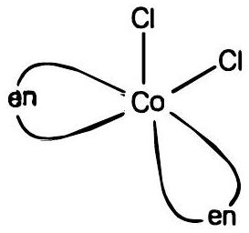
1. संरचनात्मक समावयवता
(a) बंधनी समावयवता
(b) उपसहसंयोजन समावयवता
(c) आयनन समावयवता
(d) विलायकयोजन समावयवता
2. त्रिविम समावयवता
(a) ज्यामितीय समावयवता
(b) ध्रुवण समावयवता
1. (a) बंधनी समावयवता
(i) [Co(NH3)5 NO2] Cl2 तथा [Co(NH3)5 ONO] Cl2
(ii) [Mn(CO)5 SCN] तथा [Mn(CO)5 NCS]
(b) उपसहसंयोजन समावयवता
(i) [Co(NH3)6][Cr(CN)6] तथा [Cr(NH3)6][Co(CN)6]
(c) आयनन समावयवता
(i) [Co(NH3)5 SO4] Br तथा [Co(NH3)5 Br] SO4
(d) विलायकयोजन समावयवता
(i) [Cr(H2 O)6] Cl3 (बैंगनी) तथा [Cr(H2 O)5 Cl] Cl2 · H2 O (स्लेटी हरा)
2. (a) ज्यामितीय समावयवता
(i) [CoCl2(en)2] के समपक्ष तथा विपक्ष समावयव
(b)ध्रुवण समावयवता
(i) [Co(en)3]3+ के दो रूप दक्षिणावर्त (d) और वामावर्त (l) हैं।
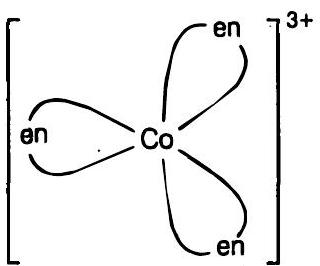
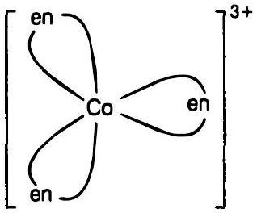
दर्पण
निम्नलिखित उपसहसंयोजन सत्ता में कितने ज्यामितीय समावयव संभव हैं?
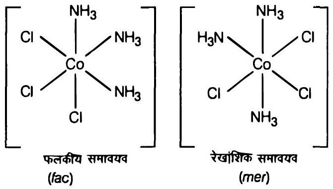
(ii) [Co(NH3)3 Cl3] के लिए दो ज्यामितीय समावयव संभव हैं।
(ii) दो ज्यामितीय समावयव संभव हैं
निम्न के प्रकाशित समावयवों की संरचनाएं बनाइए-
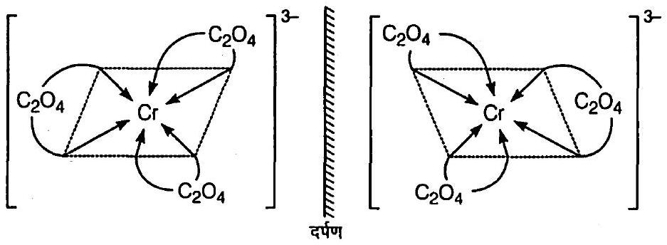
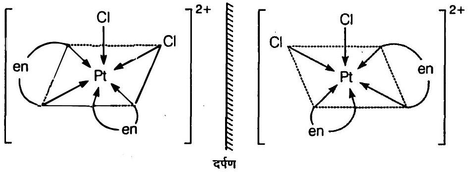
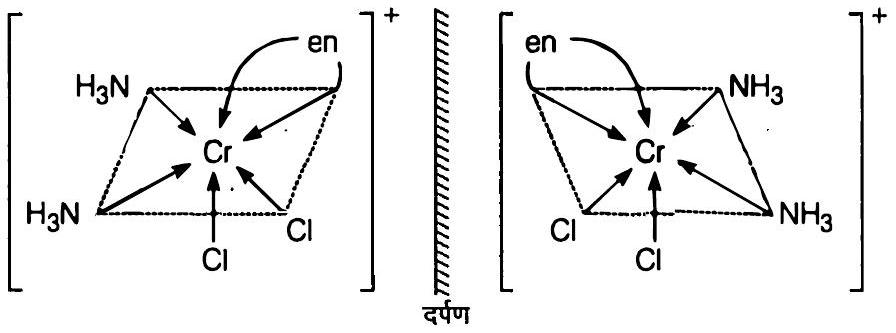
(ii) C i s-[P t C l2(e n)2]2+
(iii) C i s-[C r(N H3)2 C l2(e n)]+
निम्नलिखित के सभी समायवों (ज्यामितीय व ध्रुवण) की संरचनाएं बनाइए-
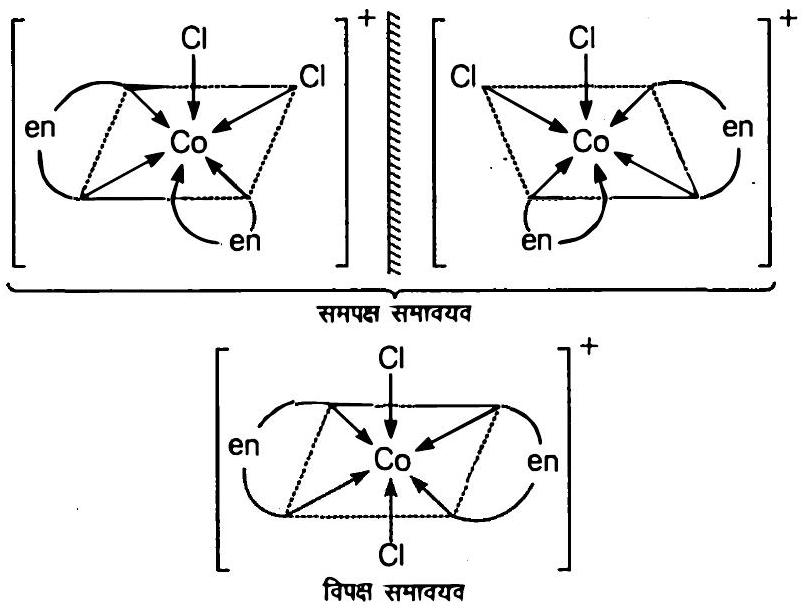
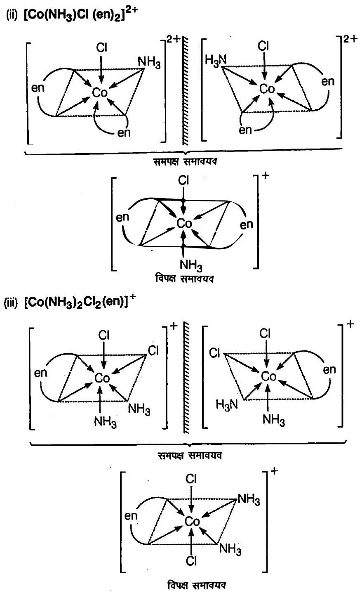
समपक्ष रूप ध्रुवण समावयवता भी दर्शाता है।
[Pt(NH3)(Br)(Cl)(py)] के सभी ज्यामितीय समावयव लिखिए।
इनमें से कितने ध्रुवण समावयवता दर्शाएंगे?
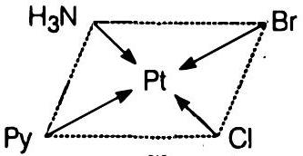
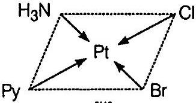
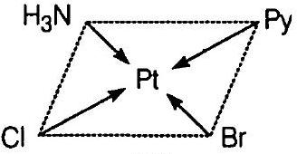
यह यौगिक CN = 4 है और इसकी ज्यामिति वर्गसमतली है।
यह ध्रुवण समावयवता नहीं दर्शाता है क्योंकि इसमें सममिति तल उपस्थित है।
यह यौगिक ध्रुवण समावयवता नहीं दर्शाता है क्योंकि इसमें सममिति तल उपस्थित है।
जलीय कॉपर सल्फेट विलयन (नीले रंग का), निम्नलिखित प्रेक्षण दर्शाता है-
उपरोक्त प्रायोगिक परिणामों को समझाइए।
जब यह F-लिगेण्डों द्वारा प्रतिस्थापित होता है, तो [CuF4]2+ (हरा) संकुल आयन बनता है।
जब यह Cl-लिगेण्डों द्वारा प्रतिस्थापित होता है, तो संकुल आयन [CuCl4]2- (चमकीला हरा) बनता है।
कॉपर सल्फेट के जलीय विलयन में जलीय KCN को आधिक्य में मिलाने पर बनने वाली उपसहसंयोजन सत्ता क्या होगी? इस विलयन में जब H2 S गैस प्रवाहित की जाती है तो कॉपर सल्फाइड का अवक्षेप क्यों नहीं प्राप्त होता?
CN-आयन प्रबल क्षेत्र लिगेण्ड हैं अतः प्राप्त संकुल पर्याप्त स्थाई होता है।
स्थायित्व स्थिरांक का मान (K = 2.0 × 1027) भी इसकी पुष्टि करता है।
↓+H2 S
संयोजकता आबंध सिद्धांत के आधार पर निम्नलिखित उपसहसंयोजन सत्ता में आबंध की प्रकृति की विवेचना कीजिए-
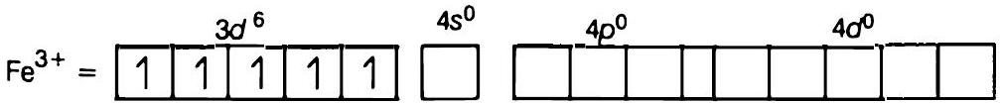
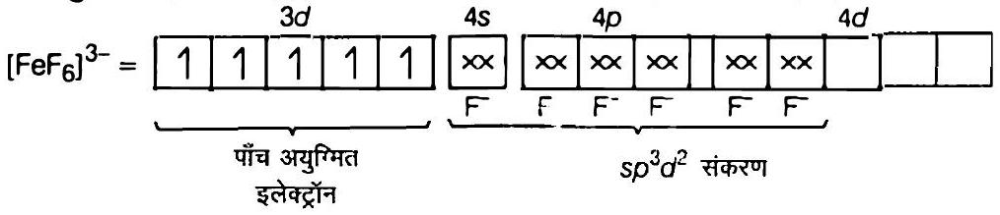
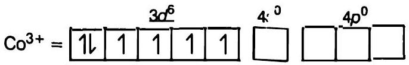
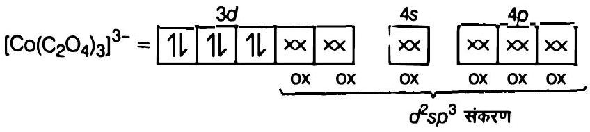
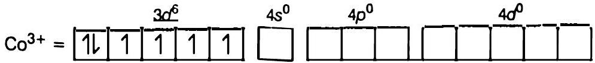
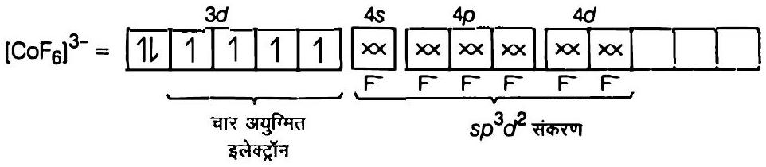
Fe2+ का बाहरी विन्यास = 3 d6 4 s0
4 ρ0
यह अयुग्मित d-इलेक्ट्रॉनों को युग्मित कर देता है।
इस प्रकार CN-आयनों को दो 3 d-कक्षक उपलब्ध हो जाती हैं।
आबंधन में (n-1) d-कक्षक भाग लेते हैं, इसलिए यह आन्तरिक कक्षक तथा निम्न प्रचक्रण संकुल होगा।
यह एक दुर्बल क्षेत्र लिगेण्ड है।
अतः इलेक्ट्रॉनों का युग्मन नहीं होगा।
इस प्रकार d-कक्षक आबंधन के लिए उपलब्ध नहीं है।
इसके आबंधन में n d-कक्षक भाग लेते हैं, इसलिए यह बाह्य कक्षक तथा उच्च प्रचक्रण संकुल है।
Co का बाहरी विन्यास = 3 d7 4 s2
यह 3 d-इलेक्ट्रॉनों को युग्मित कर देता है।
इस प्रकार पाँच में से दो 3 d-कक्षक ऑक्सेलेट आयनों के लिए उपलब्ध हो जाती हैं।
इसके आबंधन में (n-1) d-कक्षक भाग लेते हैं, इसलिए यह आन्तरिक कक्षक संकुल है।
Co का बाहरी विन्यास = 3 d6 4 s0
अतः इलेक्ट्रॉनों का युग्मन नहीं होगा।
इस प्रकार F-के लिए n d-कक्षक उपलब्ध है।
n d-कक्षक आबंधन में भाग लेते हैं, इसलिए यह बाहरी कक्षक तथा उच्च प्रचक्रण संकुल है।
अष्टफलकीय क्रिस्टल क्षेत्र में d कक्षकों के विपाटन को दर्शाने के लिए चित्र बनाइए।
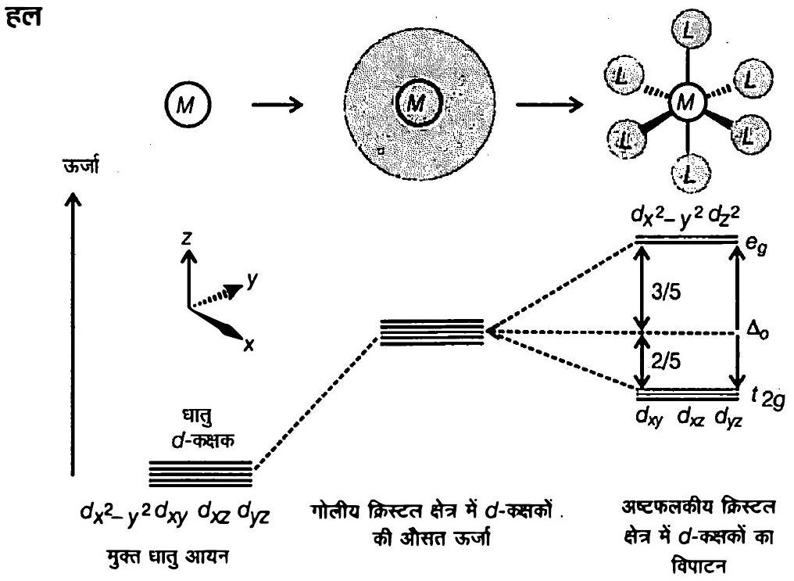
स्पेक्ट्रमीरासायनिक श्रेणी क्या है? दुर्बल क्षेत्र लिगन्ड तथा प्रबल क्षेत्र लिगन्ड में अंतर स्पष्ट कीजिए।
क्रिस्टल क्षेत्र विपाटन ऊर्जा के मानों को बढ़ते क्रम में रखने पर जो श्रेणी मिलती है, उसे स्पेक्ट्रमी रासायनिक श्रेणी कहते हैं।
<EDTA4-<NH3<en<CN-<CO
निम्न क्रिस्टल क्षेत्र विपाटन ऊर्जा CFSE (Δ0) मान वाले लिगेण्ड दुर्बल क्षेत्र लिगेण्ड कहलाते हैं।
इनके लिए Δ0<P होता है, जहाँ P युग्मन ऊर्जा है।
इसके विपरीत, उच्च CFSE(Δ0) मान वाले लिगेण्ड प्रबल क्षेत्र लिगेण्ड कहलाते हैं।
इनके लिए Δ0>P होता है।
क्रिस्टल क्षेत्र विपाटन ऊर्जा क्या है? उपसहसंयोजन सत्ता में d कक्षकों का वास्तविक विन्यास Δo के मान के आधार पर कैसे निर्धारित किया जाता है?
t2 g निम्न ऊर्जा वाला समुच्चय है और eg उच्च ऊर्जा वाला समुच्चय है।
दोनों समुच्चयों के कक्षकों के बीच ऊर्जा के अंतर को क्रिस्टल क्षेत्र विपाटन ऊर्जा ( Δ0 ) कहते हैं।
( Δ0 = अष्टफलकीय क्षेत्र के लिए है तथा Δt = चतुष्फलकीय क्षेत्र के लिए है।
)
यदि Δ0<P (युग्मन ऊर्जा) है, तो चौथा इलेक्ट्रॉन किसी एक eg कक्षक में प्रवेश करेगा।
तब विन्यास t2 g3 eg1 होगा, अर्थात् उच्च प्रचक्रण संकुल बनेगा।
जिन लिगेण्डों के लिए Δ0<P है, वे दुर्बल क्षेत्र लिगेण्ड कहलाते हैं।
यदि Δ0>P है, तो चौथा इलेक्ट्रॉन t2 g कक्षकों में से किसी एक कक्षक में प्रवेश करेगा।
तब t2 g4 eg0 विन्यास के साथ निम्न क्षेत्र संकुल बनेंगे।
जिन लिगेण्डों के लिए Δ0>P है, वे प्रबल क्षेत्र लिगेण्ड कहलाते हैं।
[Cr(NH3)6]3+ अनुचुंबकीय है जबकि [Ni(CN)4]2- प्रतिचुंबकीय, समझाइए क्यों?
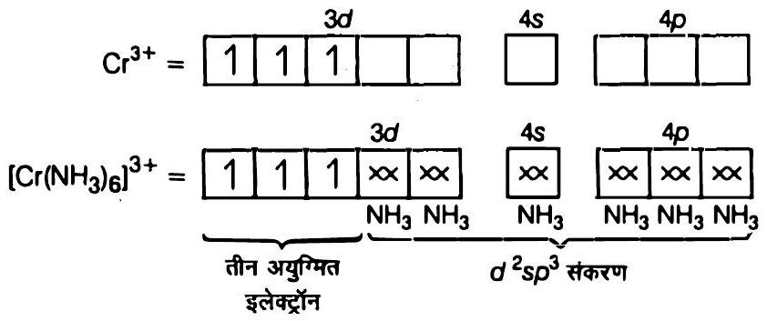
Cr की ऑक्सीकरण अवस्था = +3 है।
Cr3+ = [Ar] 3 d3
Cr3+, छह NH3 अणुओं से मिलने वाले छः युग्मित इलेक्ट्रॉनों के लिए छ: रिक्त कोश उपलब्ध कराता है।
यह d2 s p3 संकरित तथा अष्टफलकीय है।
इसमें तीन अयुग्मित इलेक्ट्रॉन उपस्थित हैं, इसलिए यह अनुचुम्बकीय है।
टेट्रासायनोनिकलेट (II) आयन [Ni(CN4)2- है।
Ni2+ = [Ar] 3 d8
4 s
CN- प्रबल क्षेत्र लिगेण्ड है, इसलिए यह 3 d-कक्षकों में इलेक्ट्रॉनों को युग्मित कर देता है।
इसके कारण इन 3 d-कक्षकों में से एक कक्षक CN-आयन के लिए रिक्त हो जाता है।
इसमें कोई अयुग्मित इलेक्ट्रॉन उपस्थित नहीं है, अतः यह प्रतिचुम्बकीय है।
[Ni(H2 O)6]2+ का विलयन हरा है परंतु [Ni(CN)4]2- का विलयन रंगहीन है।
समझाइए।
4 s
[Ni(H2 O)6]2+ संकुल आयन में H2 O अणु दुर्बल क्षेत्र लिगेण्ड हैं, इसलिए ये इलेक्ट्रॉनों का युग्मन नहीं करते।
परिणामस्वरूप संकुल में दो अयुग्मित इलेक्ट्रॉन उपस्थित रहते हैं।
d-d संक्रमण के कारण संकुल लाल क्षेत्र की ऊर्जा के संगत प्रकाश का अवशोषण करता है और हरे क्षेत्र की ऊर्जा के संगत प्रकाश का उत्सर्जन करता है।
इसलिए यह हरा है।
[Ni(CN)4]2- संकुल आयन में CN-आयन प्रबल क्षेत्र लिगेण्ड है।
इसके कारण, CN-आयनों की उपस्थिति में 3d-कक्षकों में उपस्थित दो अयुग्मित इलेक्ट्रॉन युग्मित हो जाते हैं।
अब कोई अयुग्मित इलेक्ट्रॉन नहीं बचता, इसलिए d-d संक्रमण नहीं होता है।
अतः यह रंगहीन है।
[Fe(CN)6]4- तथा [Fe(H2 O)6]2+ के तनु विलयनों के रंग भिन्न होते हैं।
क्यों?
दुर्बल क्षेत्र लिगेण्ड H2 O की उपस्थिति में अयुग्मित इलेक्ट्रॉनों का युग्मन नहीं हो पाता।
इसके विपरीत, प्रबल क्षेत्र लिगेण्ड CN- की उपस्थिति में इलेक्ट्रॉनों का युग्मन हो जाता है, इसलिए कोई अयुग्मित इलेक्ट्रॉन नहीं बचता।
अयुग्मित इलेक्ट्रॉनों की संख्या में इस अंतर के कारण दोनों संकुल आयन भिन्न रंग दिखाते हैं।
धातु कार्बोनिलों में आबंध की प्रकृति की विवेचना कीजिए।
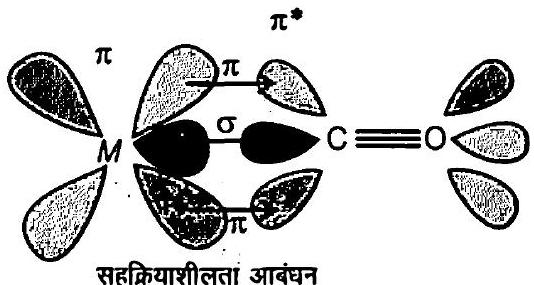
M-Cσ आबंध तब बनता है जब कार्बोनिल समूह के कार्बन पर उपस्थित इलेक्ट्रॉन युग्म धातु के रिक्त कक्षक में दान होता है।
M-C π आबंध तब बनता है जब धातु के पूरित d-कक्षकों में से एक इलेक्ट्रॉन युग्म कार्बन मोनोऑक्साइड के रिक्त प्रतिआबंधन π कक्षक में दान होता है।
इस प्रकार धातु से लिगेण्ड की ओर बना आबंध एक सहक्रियाशीलता प्रभाव उत्पन्न करता है, जो CO और धातु के मध्य आबंध को मजबूत बनाता है।
निम्न संकुलों में केंद्रीय धातु आयन की ऑक्सीकरण अवस्था, d कक्षकों का अधिग्रहण एवं उपसहसंयोजन संख्या बतलाइए-
+3+x-6 = 0
x = +3
Co3+ = [Ar] 3 d6
( ∵ C2 O42- प्रबल क्षेत्र लिगेण्ड है।
)
इसकी दंतुरता
x+0-2-1 = 0
x = +3
Cr3+ = [Ar] 3 d3
en की दंतुरता +2 = 2 × 2+2 = 6 है।
2+x-4 = 0
x = +2
Co2+ = [Ar] 3 d7
( ∵ F - एक दुर्बल क्षेत्र लिगेण्ड है।
)
x = +2
Mn2+ = [Ar] 3 d5
निम्न संकुलों के IUPAC नाम लिखिए तथा ऑक्सीकरण अवस्था, इलेक्ट्रॉनिक विन्यास और उपसहसंयोजन संख्या दर्शाइए।
संकुल का त्रिविम रसायन तथा चुंबकीय आघूर्ण भी बतलाइए:
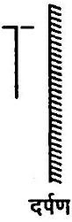
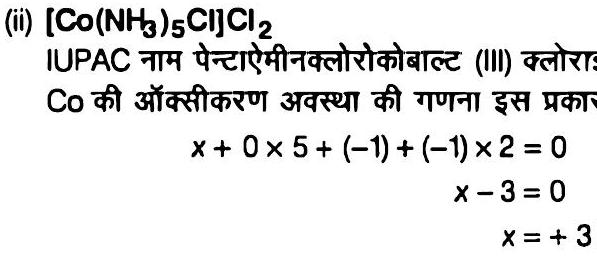
उपसहसंयोजन संख्या (CN) = 6 है।
आकार अष्टफलकीय है।
+1+x-4 = 0
x = +3
अयुग्मित इलेक्ट्रॉनों की संख्या (n) = 3 है।
चुम्बकीय आघूर्ण (μ) = √(n(n+2)) = √(3(3+2)) = 3.87 BM है।
इसके समपक्ष और विपक्ष रूप नीचे दिए गए हैं।
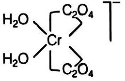
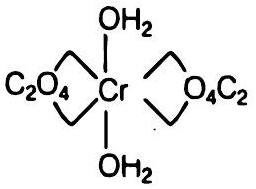
x = +3
Cr3+ का बाह्य इलेक्ट्रॉनिक विन्यास = 3 d3(t2 g3 eg0) है।
अयुग्मित इलेक्ट्रॉनों की संख्या = 3 है।
= √(15)
= 3.87 BM
फलकीय रूप में एक जैसे समूह पास-पास होते हैं, जबकि रेखांशिक रूप में ऐसा नहीं होता।
(फलकीय रूप)
(रेखाशिक रूप)
x-3 = 0
x = +3
Co3+ का बाह्य इलेक्ट्रॉनिक विन्यास = 3 d6 = t2 g6 eg0 है।
x-3 = 0
x = +3
Fe का बाह्य इलेक्ट्रॉनिक विन्यास = 3 d5(t2 g3 eg2) है।
अयुग्मित इलेक्ट्रॉनों की संख्या = 5 है।
x-2 = 0
x = +2
Mn का बाह्य इलेक्ट्रॉनिक विन्यास = 3 d5[t2 g5 eg0] है।
( ∵ CN- प्रबल क्षेत्र लिगेण्ड है।
)
अयुग्मित इलेक्ट्रॉनों की संख्या = 1 है।
क्रिस्टल क्षेत्र सिद्धांत के आधार पर संकुल [Ti(H2 O)6]3+ के बैंगनी रंग की व्याख्या कीजिए।
कीलेट प्रभाव से क्या तात्पर्य है? एक उदाहरण दीजिए।
इस प्रभाव को कीलेट प्रभाव कहते हैं।
प्रत्येक का एक उदाहरण देते हुए निम्नलिखित में उपसहसंयोजन यौगिकों की भूमिका की संक्षिप्त विवेचना कीजिए-
(a) रक्त का लाल वर्णक हीमोग्लोबिन ऑक्सीजन का वाहक है।
यह पोरफाइरिन के साथ Fe2+ का संकुल है।
(b) क्लोरोफिल प्रकाश संश्लेषण के लिए उत्तरदायी वर्णक है।
यह मैग्नीशियम (Mg2+) का पोरफाइरिन के साथ संकुल है।
(c) विटामिन B12 सायनाकोबाल एमीन है, जो प्रति प्रणाली अरक्तता कारक है।
यह कोबाल्ट का एक उपसहसंयोजक यौगिक है।
(a) प्लेटिनम का संकुल समपक्ष [Pt(NH3)2 Cl2] (समपक्ष प्लेटिन) है।
इसका उपयोग ट्यूमर वृद्धि को प्रभावी रूप से रोकने में किया जाता है।
(b) कैल्सियम के संकुल EDTA को लेड की विषाक्तता के उपचार में प्रयुक्त किया जाता है।
Ca-EDTA एक दुर्बल संकुल है।
शरीर में संकुल का कैल्सियम, शरीर में उपस्थित लैड से प्रतिस्थापित हो जाता है तथा मूत्र के साथ बाहर आ जाता है।
(c) जीव-जन्तु निकायों में कॉपर तथा आयरन की मात्रा अधिक हो सकती है।
इसे D-पेनिसिलऐमीन तथा डेसफेरीऑक्सिम B लिगेण्डों के साथ उपसहसंयोजन यौगिक बनाकर दूर किया जाता है।
गुणात्मक तथा मात्रात्मक रासायनिक विश्लेषणों में उपसहसंयोजन यौगिकों के अनेक उपयोग हैं।
(a) गुणात्मक रासायनिक विश्लेषण
Cu2+ आयन की जाँच नीले रंग के संकुल टेट्राऐमीनकॉपर (II) आयन के बनने पर निर्भर है।
Ni2+ आयन की जाँच लाल रंग के संकुल डाइमेथिल ग्लाइऑक्सिम के बनने से की जाती है।
समूह I में Ag+तथा Hg2+ में अन्तर इस तथ्य पर आधारित है।
AgCl अमोनिया में घुलकर घुलनशील संकुल बनाता है, जबकि Hg2 Cl2 अघुलनशील (अविलेय) पदार्थ बनाता है।
. Hg2 Cl2(s)+NH3 → Hg(NH2) Cl · Hg काला अविलेय पदार्थ +Cl-
(b) मात्रात्मक रासायनिक विश्लेषण में
Ni2+ का आकलन किया जाता है।
इसके लिए Ni2+ को अमोनिया की उपस्थिति में लेकर निकैल डाइमेथिल ग्लाइऑक्सिम संकुल का लाल अवक्षेप प्राप्त किया जाता है।
Ca2+, Zn2+, Fe2+, Co2+, Ni2+ आदि आयनों के आकलन में EDTA का उपयोग किया जाता है।
विभिन्न धातुओं की कुछ प्रमुख निष्कर्षण विधियों में संकुल विरचन का उपयोग होता है, जैसे सिल्वर तथा गोल्ड के निष्कर्षण में।
पोटैशियम डाइसायनो ऑरेट
कुछ धातुओं के शुद्धिकरण में भी संकुल विरचन का उपयोग होता है।
उदाहरण के लिए, मॉन्ड प्रक्रम में अशुद्ध निकेल को पहले संकुल [Ni(CO)4] में बदला जाता है,
फिर इसका अपघटन करके शुद्ध निकेल प्राप्त किया जाता है।
संकुल [Co(NH3)6] Cl2 से विलयन में कितने आयन उत्पन्न होंगे-
(i) 6
(ii) 4
(iii) 3
(iv) 2
निम्नलिखित आयनों में से किसके चुंबकीय आघूर्ण का मान सर्वाधिक होगा?
(i) [Cr(H2 O)6]3+
(ii) [Fe(H2 O)6]2+
(iii) [Zn(H2 O)6]2+
(ii) Fe2+: 3 d6 विन्यास, n = 4
(iii) Zn2+: 3 d10 विन्यास, n = 0
इसलिए इसके चुम्बकीय आघूर्ण का मान सर्वाधिक होगा।
K[Co(CO) 4 ] में कोबाल्ट की ऑक्सीकरण संख्या है-
(i) +1
(ii) +3
(iii) -1
(iv) -3
x = -1
निम्न में सर्वाधिक स्थायी संकुल है-
(i) [Fe(H2 O)6]3+
(ii) [Fe(NH3)6]3+
(iii) [Fe(C2 O4)3]3-
(iv) [FeCl6]3-
परन्तु संकुल (c) एक कीलेट है, क्योंकि इसमें तीन ऑक्सेलेट आयन कीलेट लिगेण्ड का कार्य करते हैं।
इसलिए [Fe(C2 O4)3]3- सर्वाधिक स्थायी संकुल है।
निम्नलिखित के लिए दृश्य प्रकाश में अवशोषण की तरंगदैर्ध्य का सही क्रम क्या होगा?
[Ni(NO2)6]4-,[Ni(NH3)6]2+,[Ni(H2 O)6]2+
निम्नलिखित उपसहसंयोजन यौगिकों के सूत्र लिखिए-
(i) टेट्राऐम्मीनडाइएक्वाकोबाल्ट (III) क्लोराइड
(ii) पोटैशियम टेट्रासायनिडोनिकैलेट (II)
(iii) ट्रिस(एथेन-1, 2-डाइऐमीन)क्रोमियम (III) क्लोराइड
(iv) ऐम्मीनब्रोमिडोक्लोरिडोनाइट्रिटो-N-प्लैटिनेट (II)
(v) डाइक्लोरोबिस(एथेन-1, 2-डाइऐमीन) प्लैटिनम (IV) नाइट्रेट
(vi) आयरन (III) हेक्सासायनिडोफेरेट(II)
लिगेण्ड धातु प्रतिआयन
III
[Co(NH3)4(H2 O)2] Clx
+3+4 × 0+2 × 0 = x
x = +3
प्रतिआयन लिगेण्ड धातु
[Ni(CN)4]x- (जैसा कि K+घनायन है)
या
-x = -2
x = +2
(iii) [Cr(en)3] Cl3
(iv) [Pt(NH3) BrCl(NO2)]-
(v) [PtCl2(en)2](NO3)2
(vi) Fe4[Fe(CN)6]3
निम्नलिखित उपसहसंयोजन यौगिकों के IUPAC नाम लिखिए-
(i) [Co(NH3)6] Cl3
(ii) [Co(NH3)5 Cl] Cl2
(iii) K3[Fe(CN)6]
(iv) K3[Fe(C2 O4)3]
(v) K2[PdCl4]
(vi) [Pt(NH3)2 Cl(NH2 CH3)] Cl
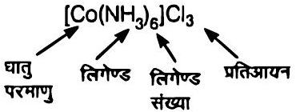
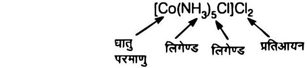
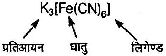
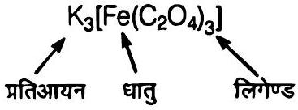
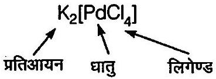
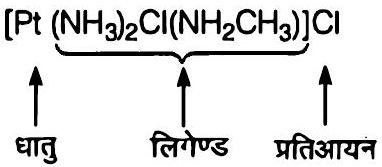
x+0-3 = 0 ⇒ x = +3
x+0-3 = 0
x = +3
+3+x-6 = 0
x = +3
]
x = +3
2+x-4 = 0
x = +2
x+0-1+0-1 = 0
x-2 = 0
x = +2
निम्नलिखित संकुलों द्वारा प्रदर्शित समावयवता का प्रकार बतलाइए तथा इन समावयवों की संरचनाएं बनाइए।
(i) K[Cr(H2 O)2(C2 O4)2]
(ii) [Co( en )3] Cl3
(iii) [Co(NH3)5(NO2)](NO3)2
(iv) [Pt(NH3)(H2 O) Cl2]
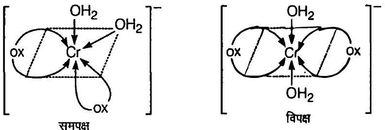
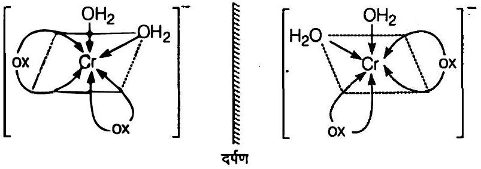
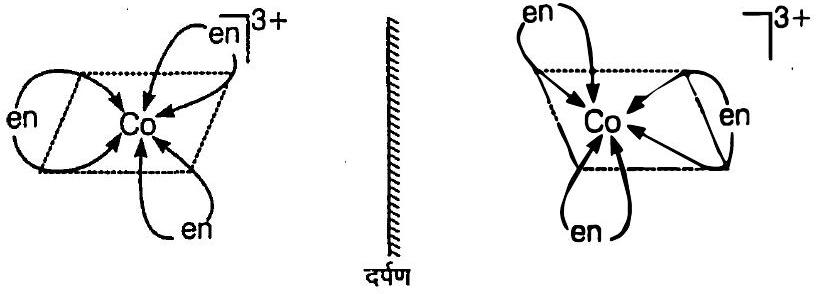
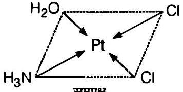
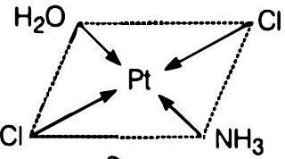
(a) यह ज्यामितीय समावयवता दर्शाता है।
इसके दो समावयव होते हैं, समपक्ष तथा विपक्ष।
(b) समपक्ष समावयव में समतिति तल नहीं होता है, इसलिए यह ध्रुवण समावयवता भी दर्शाता है, अर्थात् इसके d- तथा 1-रूप होते हैं।
(ii) [Co(en)3] Cl3 इसके दो धुवण समावयव ( d-तथा t-रूप) हैं।
अर्थात्
(iii) [Co(NH3)5(NO2)](NO3)2
इसके निम्नलिखित आयनिक समावयव तथा बंधनी समावयव अस्तित्व में होंगे।
[Co(NH3)5(NO2)](NO3)2 तथा [Co(NH3)5(NO3)](NO2)(NO3)
क्योंकि ये आयनित होकर विभिन्न आयन देते हैं।
+2 NO3-
+ NO2-+NO3-
[Co(NH3)5(NO2)](NO3)2 तथा [Co(NH3)5 ONO](NO3)2
इसका प्रमाण दीजिए कि [Co(NH3)5 Cl] SO4 तथा [Co(NH3)5(SO4)] Cl आयनन समावय हैं।
फिर दोनों के लिए निम्न परीक्षण करेंगे।
यह उस यौगिक में SO42- आयनों की उपस्थिति दर्शाता है।
दूसरा यौगिक सफेद अवक्षेप नहीं देता है।
यह उस यौगिक में SO42- आयनों की अनुपस्थिति दर्शाता है।
यौगिक (I) में प्रति-आयन Cl- आयनों की अनुपस्थिति के कारण, यह सफेद अवक्षेप नहीं देता है।
[Co(NH3)5 Cl] SO4+AgNO3(aq) → कोई अभिक्रिया नहीं
संयोजकता आबंध सिद्धांत के आधार पर समझाइए कि वर्ग समतलीय संरचना वाला [Ni(CN)4]2- आयन प्रतिचुंबकीय है तथा चतुष्फलकीय ज्यामिति वाला [NiCl4]2- आयन अनुचुंबकीय है।
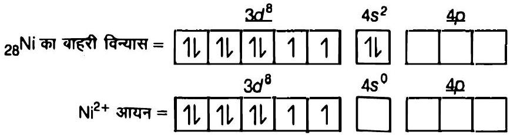
)
CN-⏟ × x ⏟ × x × ×
d s p2 संकरण
⇒ वर्ग समतली संरचना
यह संकुल आयन प्रतिचुम्बकीय है क्योंकि इसमें अयुग्मित इलेक्ट्रॉन नहीं है।
Ni2+ आयन = 1 l 1 l 1 l 1
)
Cl- × × Cl- Cl- Cl-
× × × × ⏟
s p3 संकरण
यह संकुल आयन अनुचुम्बकीय है क्योंकि इसमें दो अयुग्मित इलेक्ट्रॉन हैं।
⇒ चतुष्फलकीय संरचना
[NiCl4]2- अनुचुंबकीय है जबकि [Ni(CO)4] प्रतिचुंबकीय है यद्यपि दोनों चतुष्फलकीय है।
क्यों?
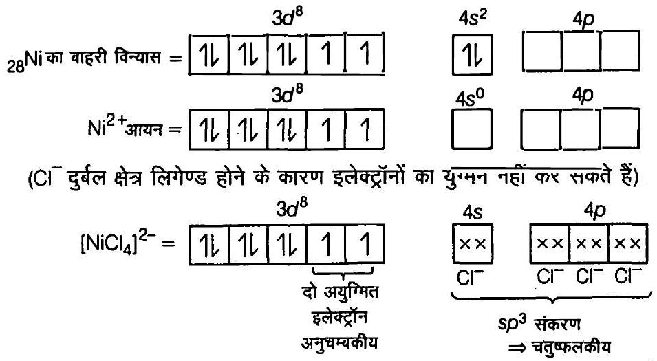
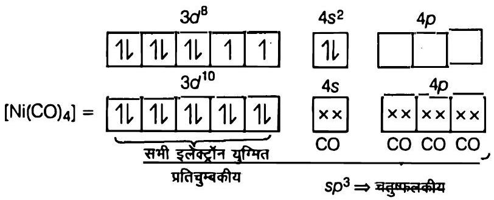
[NiCl4]2- संकुल में Ni2+ आयन का विन्यास 3 d8 है (Cl- दुर्बल क्षेत्र लिगेण्ड है, इसलिए यह इलेक्ट्रॉनों का युग्मन नहीं कर सकता)।
इसलिए इसमें दो अयुग्मित इलेक्ट्रॉन रहते हैं, जिसके कारण यह अनुचुम्बकीय है।
संकरण s p3 है, इसलिए संकुल चतुष्फलकीय है।
CO प्रबल क्षेत्र लिगेण्ड है।
इसकी उपस्थिति में 4 s इलेक्ट्रॉन 3 d कक्षक में चले जाते हैं।
इससे 3d-कक्षक में सभी इलेक्ट्रॉनों का युग्मन हो जाता है।
संकरण में 4 s तथा 4 p-कक्षक भाग लेते हैं।
इसलिए संकुल चतुष्फलकीय लेकिन प्रतिचुम्बकीय है।
Ni परमाणु का बाहरी विन्यास = 3 d8 4 s2
[Fe(H2 O)6]3+ प्रबल अनुचुंबकीय है जबकि [Fe(CN)6]3- दुर्बल अनुचुंबकीय।
समझाइए।
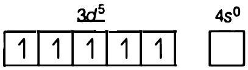
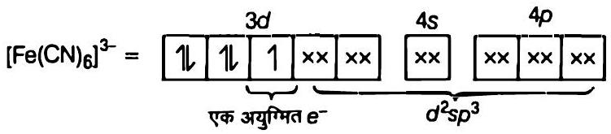
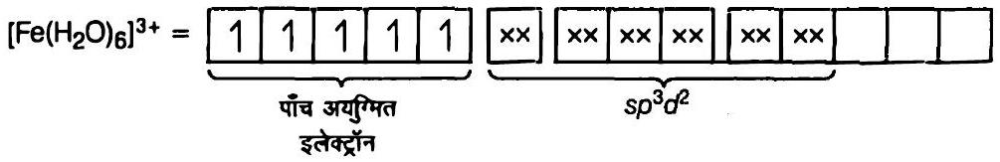
दोनों संकुलों में Fe, Fe3+ आयन के रूप में है।
अतः, Fe3+ आयन का विन्यास = 3 d5 4 s0
CN- लिगेण्ड (प्रबल क्षेत्र लिगेण्ड) की उपस्थिति में, 3 d कक्षक में इलेक्ट्रॉनों का युग्मन होने के बाद एक इलेक्ट्रॉन अयुग्मित रहता है।
d2 s p3 संकरण होने के साथ आन्तरिक कक्षक संकुल बनता है।
H2 O (दुर्बल क्षेत्र लिगेण्ड) की उपस्थिति में 3 d-इलेक्ट्रॉन युग्मित नहीं हो पाते हैं।
अतः
s p3 d2 संकरण के साथ बाह्य कक्षक संकुल बनता है।
इसमें पाँच अयुग्मित इलेक्ट्रॉन होते हैं, जिससे यह प्रबल अनुचुम्बकीय है।
समझाइए कि [Co(NH3)6]3+ एक आंतरिक कक्षक संकुल है जबकि [Ni(NH3)6]2+ एक बाह्य कक्षक संकुल है।
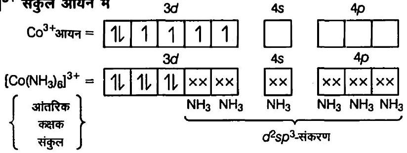
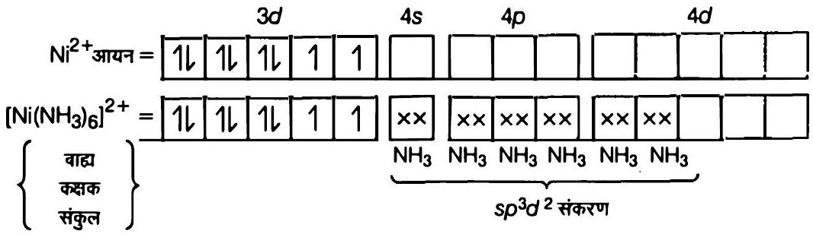
NH3 की उपस्थिति में 3 d-कक्षकों में इलेक्ट्रॉन युग्मित हो जाते हैं।
शेष दो रिक्त 3 d-कक्षक d2 s p3 संकरण में भाग लेकर आन्तरिक कक्षक संकुल बनाते हैं।
[Co(NH3)6]3+ संकुल आयन में
चूँकि यहाँ (n-1) d कक्षक उपलब्ध नहीं है, इसलिए n d-कक्षक संकरण में भाग लेते हैं।
इस प्रकार बना संकुल, बाह्य कक्षक संकुल कहलाता है।
वर्ग समतली [Pt(CN)4]2- आयन में अयुग्मित इलेक्ट्रॉनों की संख्या बतलाइए।
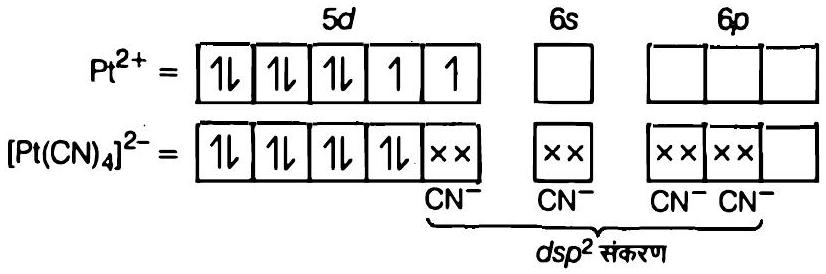
इसका बाह्य विन्यास 5 d9 6 s1 है।
वर्ग समतली संरचना के लिए, इस आयन में d s p2 संकरण होगा।
5 d कक्षकों में इलेक्ट्रॉनों का युग्मन होने से एक d-कक्षक रिक्त रहता है।
यह रिक्त कक्षक d s p2 संकरण में भाग लेता है।
इस प्रकार इस आयन में एक भी अयुग्मित इलेक्ट्रॉन नहीं है।
क्रिस्टल क्षेत्र सिद्धांत को प्रयुक्त करते हुए समझाइए कि कैसे हेक्साएक्वा मैंगनीज (II) आयन में पाँच अयुगलित इलैक्ट्रॉन हैं जबकि हेक्सासायनो आयन में केवल एक ही अयुगलित इलेक्ट्रॉन हैं।
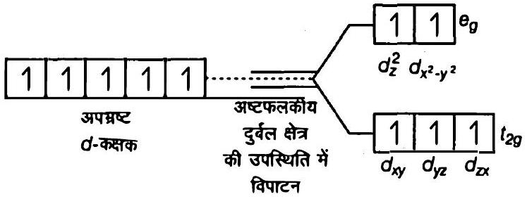
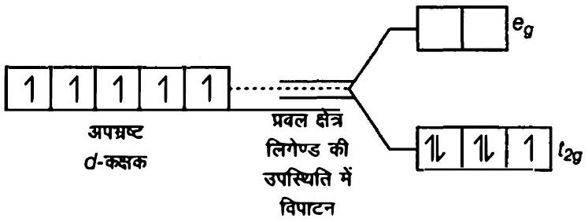
H2 O लिगेण्ड (दुर्बल क्षेत्र लिगेण्ड) की उपस्थिति में इन पाँच इलेक्ट्रॉनों का वितरण t2 g3 eg2 है।
अर्थात् पाँचों इलेक्ट्रॉन अयुग्मित रहकर उच्च प्रचक्रण संकुल बनाते हैं।
अर्थात्, दो t2 g कक्षकों में अयुग्मित इलेक्ट्रॉन हैं तथा एक t2 g-कक्षक में 1 अयुग्मित इलेक्ट्रॉन है।
इस प्रकार निम्न प्रचक्रण संकुल बनता है।